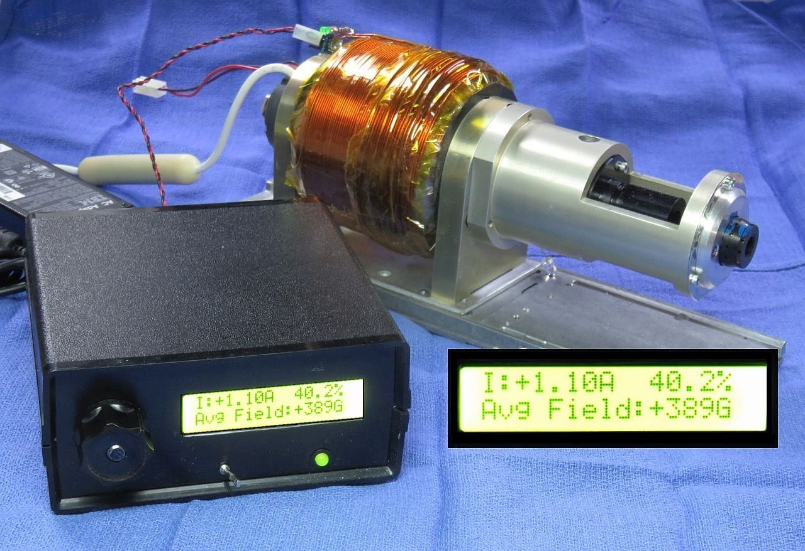
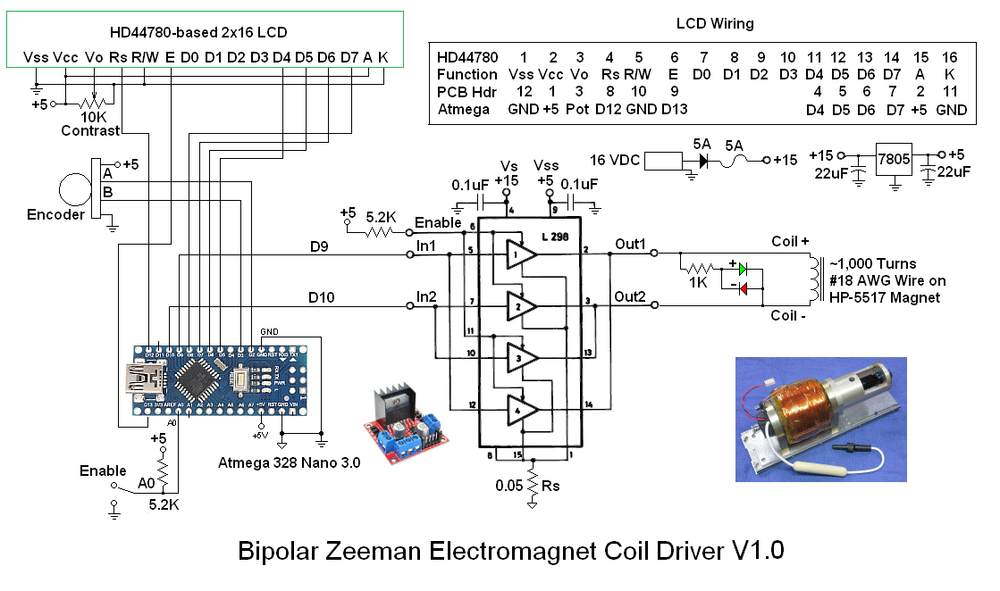
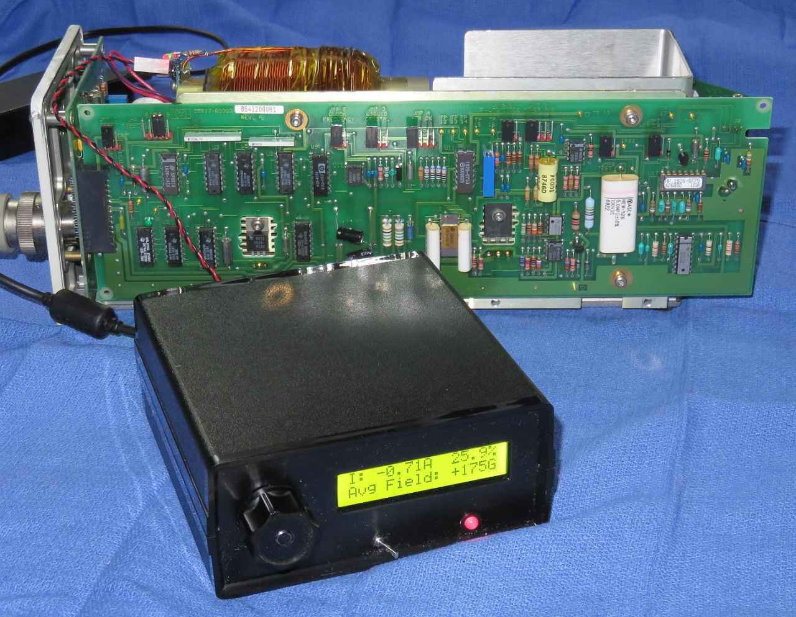

For contact info, please see the Sci.Electronics.Repair FAQ Email Links Page.
Copyright © 1994-2019
Reproduction of this document in whole or in part is permitted if both of the
following conditions are satisfied:
1. This notice is included in its entirety at the beginning.

If you are curious, the photo shows
UBPD1 driving a biased electromagnet used to evaluate and test
Helium-Neon laser tubes using the Zeeman effect to generate a pair of
optical frequencies up to a few MHz apart. For this application,
tube design and magnetic field are critical in determining the outcome.
More on this may be found in the section The
original Application. For the purposes of constructing UBPD1,
what matters is load and maximum current.
UBPD1 uses a rotary encoder for control with a 2x16 line LCD (HD44780
standard) display for the current and Gauss readouts. The knob specifies a
current from around -2.75 to +2.75 A. It is implemented open-loop so
scale factors for the current field is stored in the firmware.
Eventually, current feedback using a 0.1 ohm sense resistor may be added
to maintain the set current closed loop even if the coil resistance
changes due to temperature. Then, when the encoder knob is turned,
the controller would incrementally adjust the current from its previous
value based on a moving average of the sensed current. When the knob
is stationary, it will maintain the current at its present value by
adjusting the PWM. The average field strength will be calculated
using the sensed current based on the above data (or more likely simply
the slope based on the end-points). However, I rather think adding this
to the prototype is unlikely as it works well enough as-is.
UBPD1 also would make an excellent educational project for basic electronics
and Arduino programming. The modules and electronic components are all
readily available and very inexpensive. The entire cost using parts
from eBay and electronics distributors like Jameco or Marlin P. Jones
is well under $20. Modifications or enhancements can be easily done
once the basic system works.

The major parts are listed below. This doesn't include wire, solder, etc.
Additional parts like standoffs for mounting the circuit boards and LCD,
as well as wire, solder, etc., will be required..
About that mounting: The prototype used 1/4 inch threaded standoffs which
were hot-melt glued to the bottom of the plastic box and front panel.
CAUTION: The schematic shows a direct connection to 5 VDC for the LCD
backlight (A and K). This was safe for the specific devices used since
there is a built-in 100 ohm current-limiting resistor. But not all versions
may have that. It's easy to locate on the LCD PCB, but to be safe, a 100 ohm
resistor can be added. The LCD will still be plenty bright. A 500 ohm
trim-pot can also be added in series to adjust brightness.
The Encoder Up and Down pulses are only used for debugging. The Atmega
can accept power from the USB port, USB charger, or the external 7805
regulator (as well as external DC power higher than 5 V but not
required here since the 7805 is present).
There are many ways of doing this - some which may be overly complex, but
what I've done for the Atmega 328 Nano 3.0 board is to go to
Arduino Software and
install the current version of the Arduino IDE (V1.6.9 as of May 2016).
(I'm not sure if the board needs to be plugged in to a USB port during
this process, but mine was. During the install process, it will ask to
install the drivers. Reply "Yes" to all its requests. When the Arduino
IDE is started for the first time, go to "Tools", "Board", and select
"Arduino Nano". If the Nano is plugged in, its COM port should appear
under "Tools", "Port". If you received the Nano from me, it will have
UBPD1 firmware installed.
More info on software, drivers, and more
at Getting
Started with Arduino and Genuino on Windows.
To compile and upload the firmware (either initially or to make any
changes) will require a PC or laptop (Windows or MAC) that can run
the Arduino IDE or equivalent. Almost any vintage machine should
suffice as long as it has at least one USB port. More on the software
support environment below.
The firmware is provided as a source file which probably has an extension
of ".ino" (though the specific name doesn't matter - it's just a
text file). However, the name may NOT contain any dashes "-" due to the
peculiar restrictions of Java or something. Make a directory with the name of
the firmware (without the extension) and put the firmware file there.
For example, if the file is named UBPD1_fw_1.08.ino, make a directory
called UBPD1_fw_1.08 and put UBPD1_fw_1.08.ino in it. Note that case
matters so the name of the directory and name of the firmware file (without the
extension) must match case character-by-character exactly. Thus
UBPD1_fw_1.08.ino is not the same as UBPD1_FW_1.08.ino.
Followed after a delay of a couple seconds with:
At this point, the encoder (if installed) will be active.
The ONLY functional difference For Firmware 1.16 compared to 1.08
should be that if the Enable switch is in the Standby position,
except for the specific value for PWM
of 0.0%, the units (A,%,G) will blink at about a 2 Hz rate to indicate
that they are not the actual values. When switched to ON, the blinking
will cease. If blinking annoys you, load V1.08. :)
The specific display format is an artifact of the original application.
The default of 268G (Gauss) is the strength of the bias magnet inside
the coil. The driver can increase or decrease the field depending on polarity.
All three parameters (I, %, G) are calculated based on the encoder value
and are not measured. So, they will depend on the actual DC supply voltage.
These values are based on a ~15 DC power pack. The firmware variables
CurrentScale, GaussScale, and GaussZeroI can be modified to accomodate
the specific DC input and coil impedance.
But you can now change the code to suit your whims. Any errors will be
flagged on the first line they occur.
The Demo version outputs signals on the PWM pins that are similar to
the "real" versions, as well as pulsing "Up" and "Down" LEDs monitoring
the knob rotation. But the firmware architecture is totally different. So,
I'm not sure what it's really good for. ;-)
With care, almost any small DC motor can be driven by UBPD1
(for testing at least) with appropriate
changes in the supply voltage, possibly even on 5 VDC from a USB charger.
The typical small brushed DC hobby motors use a permanent magnet for the
stator and run on power as low a 1 or 2 V where the polarity
determines direction. Note: The behavior of brushless DC motors with
unfiltered PWM is undetermined and most will not work and may be
damaged with reverse polarity.
If nothing appears on the LCD, check the contrast adjustment. There is only
a narrow range where there is a display.
There is one known bug/issue in that due to the time spent in the
LCD library routines, if the knob is turned too quickly, increment
counts may be incorrect in both number and sign. However, the effects
are generally not noticeable unless monitoring the Up/Down signals.
Due to a quirk in the behavior of the L298 for highly inductive loads, when
driving an electromagnet coil like the one shown in the photo, above,
or similar devices, there may be an area (±) around 0% drive
where no net current actually flows through the device. The cause is not
known, so the quirk is simply coded out with the DeadZone parameter.
Isn't software wonderful? ;-)

The photo above shows a test setup where UBPD1 is controlling the field
applied to a typical HeNe laser tube installed inside the biased
electromagnet in a Hewlett Packard 5517
laser chassis. The term "biased" means that there is a permanent magnet
beneath the coil which provides a fixed offset field to which the
electromagnet adds or subtracts its contribution depending on polarity.
That reduces the drive power requirements to generate the same resulting
field strength by nearly 75 percent compared to an electromagnet alone.
Not only can the power supply be smaller, but the coil won't melt down
as quickly. :) The coil has approximately 1,000 turns of #18 magnet
wire - about 3-1/2 pounds of copper!
By adjusting the field, the maximum difference or "split"
frequency can be determined along with other characteristics like the
laser output power.
The normal permanent magnet can then have its field adjusted to match
the field determined for the tube being tested before being installed
permanently.
Intact Zeeman tube assemblies could also be tested if the bias magnet
were removable. The tube assembly to be tested would then be
installed in its place, requiring only the removal of its rear foot
bracket. The calibration would be offset depending on
the field of the magnet, but the range should still be more
than sufficient.
Much more on this (which you care even less about)
may be found the chapter: Stabilized HeNe Lasers
of Sam's Laser FAQ. Start with
Hewlett-Packard/Agilent/Keysight Stabilized
HeNe Lasers.
All Rights Reserved
2. There is no charge except to cover the costs of copying.
DISCLAIMER
UBPD1 is intended for use in hobbyist, experimental, research, and other
applications where a bug in the hardware, firmware, or software, will not
have a significant impact on the future of the Universe or anything else.
While every effort has been made to avoid this possibility, UBPD1 is an
on-going development effort. We will not be responsible for any consequences
of such bugs resulting in material of financial loss.
or bruising to your pet's ego from any number of causes
directly or indirectly related to this material. ;-)
Acknowledgment
Thanks to Jan Beck for getting me interested
in microcomputer development. If anyone had told me
six months ago that I'd be writing code for an Arduino-compatible
board - and enjoying it (sort of) - I would have suggested
they were certifiably nuts. ;-)
Introduction
UBPD1 is a simple microprocessor-based controller for driving loads like
servo motors and electromagnet coils. With a 5 ohm load and 16 VDC
power supply, its continuous range via a knob on the front panel is from
approximately -2.75 amps to +2.75 amps. For other loads and power input,
the range can approach ±4 amps. A 2 line LCD provides real-time
status for current, percent drive, and other optional parameters.
UBPD1 installed in Cheezy Plastic Box with Zeeman Electromagnet. ;-)
Specifications for full range Zeeman magnet coil driver
These apply to the prototype built for the original laser application.
More info on this below if interested. But that's why it has the magnetic
filed in the specs: ±2.75 A into the coil changes the field by around
±350 Gauss relative to the permament magnet's value of 268G.
Line 1: I: ±X.XXA YYY.Y%
Line 2: Avg Field: ±ZZZG
Wiring Diagram and Parts List
The Atmega firmware is called "Zeemagnet Driver" since the original
intended application was to control the field for a Zeeman laser. :-)
This runs totally open-loop using the encoder knob
alone to adjust the current. The major components the Atmega 328 Nano 3.0,
H-bridge driver PCB, and 2x16 character LCD. The driver PCB has
the L298, free-wheeling diodes, and a 78M05, 5 V regulator.
(For this setup, it is disabled as recommended where the input
voltage is above 15 VDC, and a separate 7805 is used.)
The two channels of the L298 are driven in parallel. An encoder
is specified since it was desirable for the default current at
power-on to be 0 A regardless of knob position. The sense resistor
is present but not used just to assure that its voltage drop won't
affect operation since the return current of the L298 also passes
through it since its in the total return current path from the
-Bridge driver PCB and thus will add a small offset to the logic
levels. A small fan was also added
blowing air through the L298 heat-sink.
Arduino/Atmega Pin Assignments
Here is a list of the Atmega 328 Nano 3.0 PCB external pins used by UBPD1:
Arduino Pin Physical Pin Function
--------------------------------------------------------------------------
D2 5 Encoder A input
D3 6 Encoder B input
D4 7 LCD D4
D5 8 LCD D5
D6 9 LCD D6
D7 10 LCD D7
D8 11 Encoder UP pulse
D9 12 PWM positive drive
D10 13 PWM negative drive
D11 14 Encoder Down pulse
D12 15 LCD Rs
D13 16 LCD E
A0 20 Enable-H
+5V 27 +5 VDC from on-board regulator or USB
GND 4,29 Ground/Common
Installing the Arduino Device Driver
Before firmware can be uploaded to the Atmega board, a device driver must be
installed to enable upload of firmware.
Latest Versions of the Firmware
If I provide the Atmega board, a functional version of the firmware will
already be installed. In that case, no computer or operating system
is ever required if the defaults are acceptable. But since that
is extremely highly unlikely, dust off those C programming brain cells. :)
If I was able to write it, you can change without the Universe
exploding. :) And there is no GUI to worry about. :)
Uploading the UBPD1 Firmware
Using the Arduino IDE is straightforward, if somewhat slow compared to some
alternatives like UECIDE.
Zeemagnet Driver
Version: 1.16
I: 0.00A 0.0%
Avg Field: 268G
Troubleshooting
Of course it will work the first time! To avoid fire and smoke, the
entire system can be powered from a direct USB port or USB charger
for initial testing. There won't be enough current to actually
drive much of anything, but the PWM waveforms will be correct and
there will be some response from the red/green LED.
Firmware Description
The firmware consists of three sections written in C:
The Original Application
UBPD1 was built specifically for testing the Helium-Neon (HeNe) laser tubes
used in Zeeman-split two frequency lasers. This type of laser is the
key component used for nano-scale positioning in applications like
semiconductor wafer steppers and diamond turning lathes where the
wavelength the laser light is the "yardstick". Under specific conditions,
a basic HeNe laser can have its optical frequency split into to separate
components that differ by a few MHz (out of 475 THz!). This is determined
by several tube design parameters and the strength of an axial magnetic field.
References
Electronics
Arduino
Atmega 328 Nano 3.0